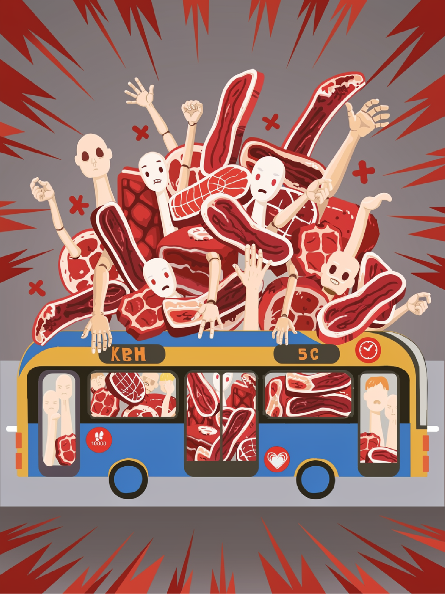

KØDMARKED PÅ HJUL FØRTE TIL DØDSFALD

KØDMARKED PÅ HJUL FØRTE TIL DØDSFALD
Endnu en overfyldt buslinje 5C resulterede i en kritisk hændelse i myldretiden, hvor én person blev mast og afgik ved døden.
Overfyldning på buslinje 5C resulterede i kritisk hændelse i myldretiden.
En alvorlig hændelse fandt sted på buslinje 5C i myldretiden, hvor en overfyldt bus førte til, at en
passager afgik ved
døden. Episoden sætter fokus på kapacitetsudfordringer og sikkerhedsforhold i den kollektive transport,
særligt på
stærkt belastede ruter.
Ifølge tilgængelige oplysninger var bussen fyldt til maksimal kapacitet allerede inden hændelsen. Flere
passagerer steg
dog på undervejs, hvilket resulterede i en situation med betydelig trængsel og begrænset bevægelsesfrihed
for de
ombordværende.
Under en opbremsning kombineret med et sving mistede flere passagerer balancen samtidig. Den efterfølgende
bevægelse i
passagergruppen udviklede sig til en kædereaktion, hvor personer blev presset ind i hinanden. I denne
situation blev en
passager fanget i den nederste del af mængden.
Vidneudsagn peger på, at det var vanskeligt for medpassagerer at reagere eller skabe plads til at afhjælpe
situationen,
da den generelle trængsel begrænsede både udsyn og bevægelsesmuligheder. Først efter at bussen standsede,
og
passagertrykket blev reduceret, blev hændelsens alvor fuldt erkendt.
Buslinje 5C er blandt de mest benyttede ruter og er i daglig tale ofte omtalt som et “kødmarked”, hvilket
afspejler de
oplevede forhold med høj passagertæthed. Hændelsen rejser spørgsmål om, hvorvidt den nuværende kapacitet
og håndtering
af passagerflow er tilstrækkelig i perioder med høj belastning.
Samtidig peger hændelsen på en adfærdsmæssig dimension, hvor passagerer gentagne gange vælger at stige på
trods af
synlig overfyldning. Denne praksis kan i kombination med fysiske begrænsninger øge risikoen for farlige
situationer ved
pludselige bevægelser i bussen.
Der er på nuværende tidspunkt ikke offentliggjort yderligere oplysninger om hændelsesforløbet eller
eventuelle tiltag
som følge heraf.
Hændelsen understreger behovet for øget opmærksomhed på sikkerhed i overfyldte transportmidler samt en
vurdering af
kapacitet og passagerhåndtering på særligt belastede ruter som buslinje 5C.